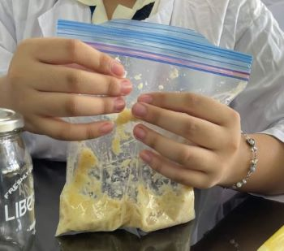

For our Biology 1 subject, we were tasked to perform an experiment that has a correlation with the digestive system. In the first step of the experiment, which is to place the bananas and crackers inside the zip lock bag, we observed that ingestion was simulated. Ingestion is the act of eating or feeding food.
We noticed that the addition of water imitates the process of chemical digestion in the mouth, wherein food is chemically digested with saliva that is delivered by the salivary glands. Salivary amylase, which digests glucose, is also present in this process. Here, food is also broken down into smaller pieces through chewing. We also noticed that the zip lock bag both represents the mouth for ingestion and the stomach for digestion. The addition of water helped in the breaking down of food inside the zip lock bag; hence, we observed that this can be compared to the saliva which helps to moisten the food for easy swallowing.
The third step of the experiment is the crushing of food inside the zip lock bag. As per our observation, the crushing of food simulates the muscles inside the stomach that churn, mush, and digest the food before it mixes with digestive juices.

Furthermore, we noticed that the addition of orange juice represents the stomach's secretion of gastric juice which converts the food into chyme. This gastric juice, containing hydrochloric acid (HCl) and pepsin, or protein-digesting enzyme, kills bacteria and digests protein. The four major kinds of biomolecules are carbohydrates, lipids, nucleic acids, and proteins. These four compounds are found in the foods you eat.